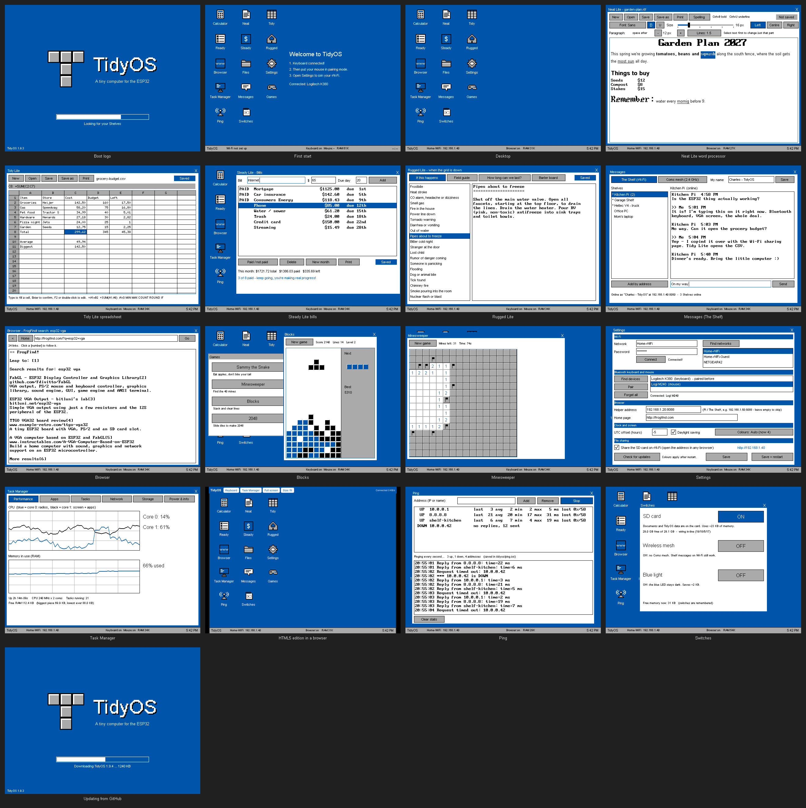
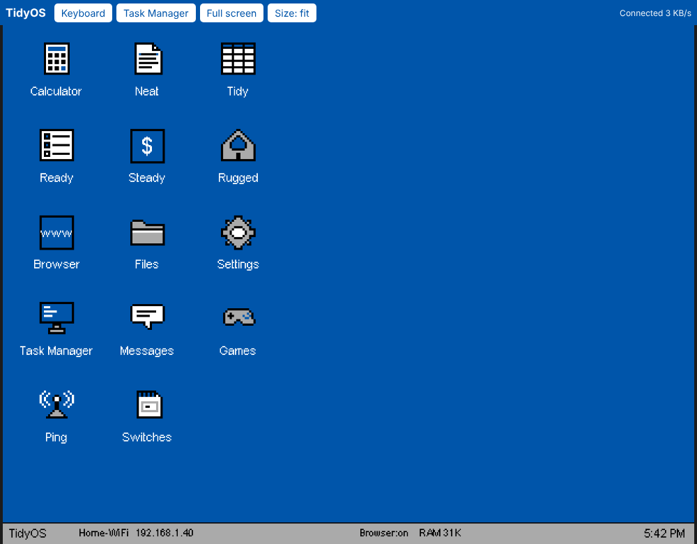
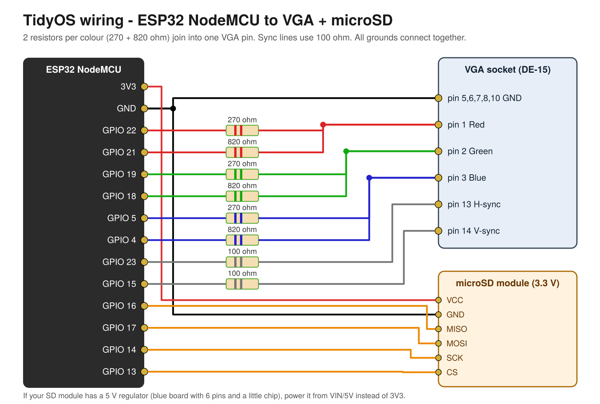

1. Install
Pick where the screen goes:
VGA edition: the desktop shows on a VGA monitor wired to the board with resistors. Use a Bluetooth LE keyboard and mouse.
HTML5 edition: no monitor or resistors needed. The desktop shows in a web browser on any phone, tablet or PC on your Wi-Fi, and that browser is the keyboard and mouse. Bluetooth is off to leave more memory for apps.
Plug your NodeMCU ESP32 into this computer with USB, then click the button. Works in Chrome or Edge on a computer.
Can't connect? Hold the BOOT button on the board while you click Install. Installing erases the board. You can switch editions any time by installing the other one.
What it looks like


Drawn previews made from TidyOS's own layouts, colours and fonts.
2. Wire it
Nothing to wire for the screen. A microSD module is still recommended for your files. Without one, TidyOS uses the board's internal flash. Either wiring works; TidyOS finds the card on its own:
| Wiring | MISO | CLK | MOSI | CS | Power |
|---|---|---|---|---|---|
| In-line (module plugged straight onto GND · 19 · 18 · 5 · 17, same as The Shelf) | 19 | 18 | 5 | 17 | 3v3 pin bent up, one jumper to 3V3 |
| Classic | 16 | 14 | 17 | 13 | 3V3 and GND |
The HTML5 edition doesn't drive any VGA pins, which is what frees 19, 18 and 5 for the in-line wiring. Task Manager → Storage shows which wiring it found.
2. Wire it

| ESP32 | Through | To |
|---|---|---|
| GPIO 22 / GPIO 21 | 270 Ω / 820 Ω | VGA pin 1 (red) |
| GPIO 19 / GPIO 18 | 270 Ω / 820 Ω | VGA pin 2 (green) |
| GPIO 5 / GPIO 4 | 270 Ω / 820 Ω | VGA pin 3 (blue) |
| GPIO 23 | 100 Ω | VGA pin 13 (H-sync) |
| GPIO 15 | 100 Ω | VGA pin 14 (V-sync) |
| GND | – | VGA pins 5, 6, 7, 8, 10 and SD GND |
| GPIO 16 / 17 / 14 / 13 | – | SD MISO / MOSI / SCK / CS (the in-line wiring is HTML5 only: 19, 18, 5 are VGA pins) |
| 3V3 (VIN for 5 V modules) | – | SD VCC |
3. First start
- Power the board. On a phone or PC, join the Wi-Fi hotspot TidyOS-Setup (password
tidyos123). - The desktop pops up, or open http://192.168.4.1.
- Open Settings, find your home Wi-Fi, type the password, then Connect and Save.
- Rejoin your home Wi-Fi and open http://tidyos.local (or the address shown at the bottom of the desktop).
On a phone, tap Keyboard in the top bar to type. Task Manager and Full screen are up there too. One browser at a time: opening TidyOS somewhere else takes over. If it can't join your Wi-Fi it opens the TidyOS-Setup hotspot again, and it turns the hotspot off 2 minutes after it's on your home Wi-Fi.
3. First start
- Put your Bluetooth keyboard in pairing mode. TidyOS connects to it automatically.
- Then put your Bluetooth mouse in pairing mode.
- Open Settings, find your Wi-Fi, type the password, then Connect and Save.
Bluetooth LE keyboards and mice only. With no Bluetooth device you can type in a serial monitor at 115200.
Apps
Calculator · Neat Lite (writing, spell check) · Tidy Lite (spreadsheet) · Ready Lite (to-do) · Steady Lite (bills) · Rugged Lite (grid-down guide) · Messages (The Shelf + Coms mesh) · Browser · Files · Settings · Task Manager
Printing: network printers (found automatically), through a Pi with CUPS, or Save as PDF.
Wi-Fi file sharing: one switch, then copy files to and from the SD card from any browser (port 8081 in the HTML5 edition).
Games: Sammy the Snake · Minesweeper · Blocks · 2048
For better web pages, run helper/tidyos_proxy.py on a Raspberry Pi and enter its address in Settings → Browser.
See the README for everything else.